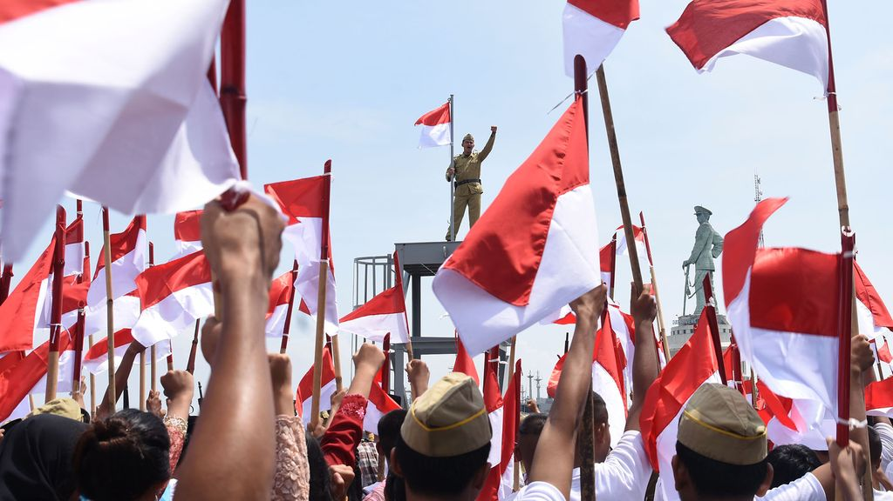

Demokrasi adalah bentuk sistem pemerintahan di mana kekuasaan politik berasal dari rakyat atau warga negara tersebut, baik secara langsung
atau secara representatif melalui perwakilan yang mereka pilih. Hal ini meliputi pemilihan umum (pemilu), perlindungan hak asasi manusia (HAM),
pembagian kekuasaan, aturan hukum, kebebasan pers, dan partisipasi sipil. Istilah "demokrasi" berasal dari bahasa Yunani kuno, di mana "demos
" berarti "rakyat" dan "kratos berarti "kekuasaan" atau "pemerintahan". Menurut KBBI, demokrasi juga diartikan sebagai gagasan atau
pandangan hidup yang mengutamakan persamaan hak dan kewajiban serta perlakuan yang sama bagi semua warga negara.
Dalam sistem demokrasi, rakyat memiliki hak untuk berpartisipasi dalam pengambilan keputusan politik, baik melalui pemilihan umum, referendum,
atau mekanisme partisipasi lainnya. Prinsip dasar demokrasi adalah kedaulatan rakyat, di mana pemerintahan dijalankan sesuai dengan kehendak
mayoritas dengan menghormati hak-hak minoritas.
Indonesia merupakan negara demokrasi. Sehubungan dengan perkembangannya, demokrasi Indonesia dibagi menjadi empat masa, yaitu sebagai berikut.
Marilah mencari tahu lebih lanjut tentang Sejarah Demokrasi di Indonesia, klik di sini.